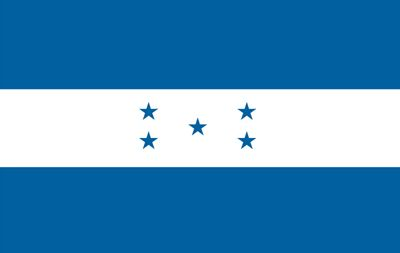
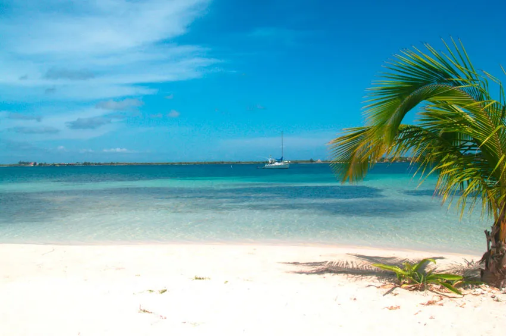
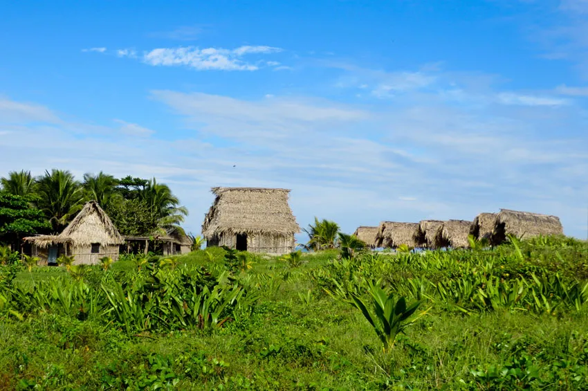
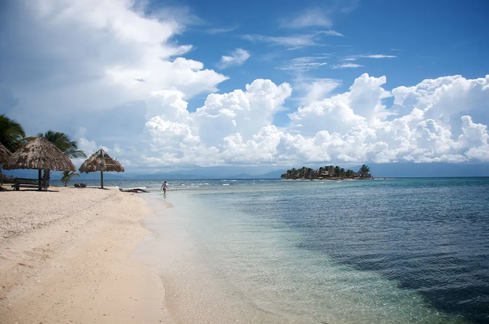
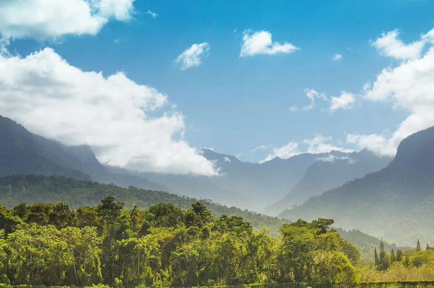

Historia
La República de Honduras, situada en el centro-norte de Centroamérica, cuenta con una población de
aproximadamente 8.7 millones de habitantes. Su capital es Tegucigalpa. El territorio de Honduras es
muy accidentado, formado por altas filas de montañas, elevadas planicies, y profundos valles en los
que se encuentran extensos y fértiles llanos cruzados por caudalosos ríos lo cual contribuye a su
rica biodiversidad. Su privilegiada ubicación entre dos océanos y sus condiciones topográficas crean
una gran variedad de hábitats, desde bosques nublados hasta arrecifes coralinos, favorables para una
alta diversidad de flora y fauna. Honduras es un país multiétnico, multicultural y multilingüe con
cuatro grandes familias étnicas: los blancos o mestizos que son la mayoría, los pueblos indígenas
(lencas, misquitos, tolupanes, chortis, pech, tawahkas), los garífunas y los criollos de habla
inglesa. Aunque el idioma oficial de Honduras es el español, la Constitución se compromete a
preservar y promover las culturas nativas.
Simbolos patrios
Escudo nacional
Por iniciativa de don Dionisio de Herrera en su cargo como Jefe de Estado de Honduras, decretó la
creación de un Escudo Nacional, el 3 de octubre de 1825. El representa de su historia y la variedad de
los recursos naturales que poseen y los cuales deben proteger y conservar.
El soberano Congreso Nacional en el decreto No. 216 y en el artículo 142 considera al Escudo como
Símbolo Nacional para todos los usos, de modo claro y general.

Bandera actual
Después de 45 años de Independencia, fue que Honduras contó con Bandera Nacional. Durante ese tiempo se
utilizó la misma bandera que representaba a la República Federal Confederada.
Por decreto número 7 emitido por el Congreso Nacional el 16 de febrero de 1866, se estableció el
pabellón nacional, el cual debe de constar de tres franjas iguales y horizontales, la superior y la
inferior de color azul turqueza, y la del centro blanca con cinco estrellas del mismo color azul
turqueza en el centro.

Himno de Honduras
Tu bandera es un lampo de cielo
Por un bloque de nieve cruzado;
Y se ven en su fondo sagrado
Cinco estrellas de pálido azul;
En tu emblema, que un mar rumoroso
Con sus ondas bravías escuda,
De un volcán, tras la cima desnuda,
Hay un astro de nitida luz.
India virgen y hermosa dormías
De tus mares al canto sonoro,
Cuando hechada en tus cuencas de oro
El audaz navegante te halló;
Y al mirar tu belleza extasiado,
Al influjo ideal de tu encanto,
La orla azul de tu esplendido manto
Con su beso de amor consagró.
Coro...
De un país donde el sol se levanta,
Mas allá del Atlante azulado,
Aquel hombre que te había soñado
Y en tu busca a la mar se lanzó.
Cuando erguiste la pálida frente,
En la viva ansiedad de tu anhelo,
Bajo el dombo gentil de tu cielo
Ya flotaba un extraño pendón.
Coro...
Era inutil que el indio tu amado
Se aprestara a la lucha con ira,
Porque envuelto en su sangre Lempira
En la noche profunda se hundió;
Y de la épica hazaña, en memoria,
La leyenda tan sólo ha guardado
De un sepulcro el lugar ignorado
Y el severo perfil de un peñón.
Tú también, ¡oh mi patria!, te alzaste
De tu sueño servil y profundo;
Tú también enseñastes al mundo
Destrozado el infame eslabón.
Y en tu suelo bendito, tras la alta
Cabellera de monte salvaje,
Como un ave de negro plumaje,
La colonia fugaz se perdió
Coro...
Extensión territorial
112,492 km²
Lista de departamentos
- Atlántida
- Colón
- Comayagua
- Copán
- Cortés
- Choluteca
- El Paraíso
- Francisco Morazán
- Gracias a Dios
- Intibucá
- Islas de la Bahía
- La Paz
- Lempira
- Ocotepeque
- Olancho
- Santa Bárbara
- Valle
- Yoro
Lugares turísticos mas importantes
1. Islas de la Bahía
Sin duda, uno de los más fascinantes lugares turísticos de Honduras, son las Islas de la Bahía, un
paraíso caribeño de arenas blancas y aguas cristalinas, rodeado por la segunda barrera de coral más
grande del planeta.
Roatán es la isla más conocida del archipiélago, elegida por numerosas celebridades de Hollywood para
disfrutar de sus vacaciones. En esta isla, se encuentra la famosa West Bay, distinguida por varias
publicaciones ligadas al mundo del turismo, como una de las 10 mejores playas del planeta. Además de
hermosas playas y privilegiados fondos marinos, esta isla ofrece prístinos bosques tropicales y la
interesante huella indígena de los garífunas.

2. Telá-
Esta pequeña ciudad portuaria, es considerada uno de los principales balnearios costeros del Caribe
Hondureño, hogar de playas de ensueño y lujosos complejos hoteleros.
Sumado a sus playas de arenas blancas y aguas turquesas, Tela presenta el atractivo de sus entornos
naturales y multiculturalidad, contando con varios parques nacionales que protegen el hábitat de la
costa caribeña, tales como Jeanette Kawas o Punta Izopo; además de numerosas aldeas garífunas, que dan
muestra de un invaluable patrimonio cultural, como San Juan, Triunfo de la Cruz y Tornabé.

3. Cayos Cochinos
Los Cayos Cochinos, son un pequeño archipiélago conformado por dos islas: Cayo Menor y Cayo Mayor, además
de 13 cayos más pequeños de origen coralino. Todo el conjunto hace parte de un área marina protegida.
El encanto de estas islas lo constituyen tanto sus escenarios marinos atiborrados de arrecifes de coral,
como sus interminables playas de arenas blancas, muchas de ellas prácticamente vírgenes. Los arrecifes
que rodean a los cayos, son considerados uno de los mejores puntos de buceo de Honduras.

4. La Ceiba:
Conocida como la capital del ecoturismo de Honduras, es una de las ciudades más turísticas del país,
ofreciendo hermosas playas caribeñas y una vasta oferta de entretención, además de ser puerta de entrada
a los famosos Cayos Cochinos, y a otras reservas naturales, donde practicar rafting, senderismo y
escalada.
A pocos kilómetros de La Ceiba, se encuentra el Parque Nacional Pico Bonito, la reserva más famosa de la
zona, hogar de exuberantes bosques tropicales y escarpadas montañas, considerado el más biodiverso del
país. También, en las cercanías de la Ceiba, se encuentra la comunidad Sambo Creek, otra de las
tradicionales villas garífunas que ponen en vitrina, la música y gastronomía típica de las comunidades
indígenas hondureñas.
